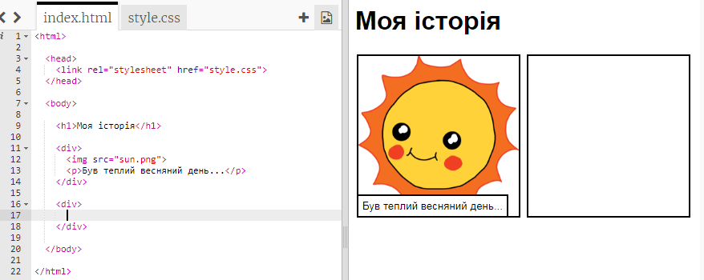

Можливо, ви пам'ятаєте з проекту 'З днем народження', що вміст веб-сторінки розміщений в <body> HTML-документа.
Перейдіть до 7 рядка коду і ви побачите вміст веб-сторінки, який знаходиться всередині тегів <body> і </body>.
screenshot
Чи можете ви сказати, для яких частин веб-сторінки які теги використовуються?
screenshot
<h1> – це заголовок. Для створення заголовків різних розмірів можна використовувати цифри від 1 до 6;
<div> є скороченням від слова поділ (division) і способом групування матеріалу. На цій веб-сторінці ви будете використовувати його для групування всього матеріалу для кожної частини вашої розповіді;
<img> – це зображення;
<p> – це абзац тексту.
Завдання: Внесіть свої зміни
Відредагуйте HTML і CSS код, щоб налаштувати свою веб-сторінку.
screenshot
Ви можете змінювати кольори, що використовуються на веб-сторінці. Також ви можете використовувати такі шрифти, як Arial, Comic Sans MS, Impact і Tahoma.
Якщо вам потрібна допомога, можете скористатися підказками з проекту "З днем народження".
Перейдіть до 15 рядка коду і додайте ще один набір <div> і </div> (перший та останній теги). Це дозволить створити нове поле для наступної частини вашої історії.

screenshot
Додайте ще однин абзац тексту всередині вашого нового тегу <div>.
screenshot
Тепер ви можете додати до вашого нового поля зображення, вставивши цей код всередину тегу <div>:
<img src="">
screenshot
Зверніть увагу, що теги трохи відрізняються від інших, оскільки вони не мають кінцевого тегу.
Для HTML зображення вам потрібно вказати джерело зображення всередині лапок.
Натисніть на значок зображення, щоб побачити усі малюнки, які прикріплені до вашого проекту.
screenshot
Знайдіть ім'я зображення, яке ви хочете додати, наприклад buildings.png і скопіюйте його.
Тепер перейдіть назад в index.html, щоб повернутися до коду.
screenshot
Залишилось тількт вставити назву малюнку в тег <img>
<img src="buildings.png">
screenshot
Крок 4: Пошук власних зображень
Знайдімо зображення з Інтернету, щоб додати їх до вашої історії.
Завдання для виконання
Перейдіть на jumpto.cc/html-images і знайти зображення, яке ви хочете додати до своєї історії.
Клацніть правою кнопкою миші по зображенню і виберіть «Копіювати адресу (або URL) зображення». URL - це адреса зображення.
screenshot
Вставте URL всередині лапок в <img>. Зображення повинне з'явитися!
screenshot
Збережіть свій проект
Крок 5: Завантаження зображень
Якщо у вас є обліковий запис Trinket, ви також можете завантажувати свої власні зображення на веб-сторінку!
Завдання для виконання
Натисніть на значок зображення у верхній частині чернетки, а потім натисніть кнопку "Add image" («Додати зображення»).
screenshot
Знайдіть зображення на вашому комп'ютері, і перетягніть його на чернетку.
screenshot
І, як і раніше, тепер можна просто написати ім'я нового зображення всередині лапок <img>, наприклад:
<img src="buildings.png">
Збережіть свій проект
Виклик: Продовжуйте далі!
Використовуйте те, що ви дізналися в цьому проекті, щоб закінчити свою історію!